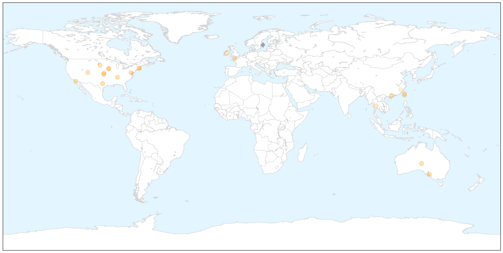
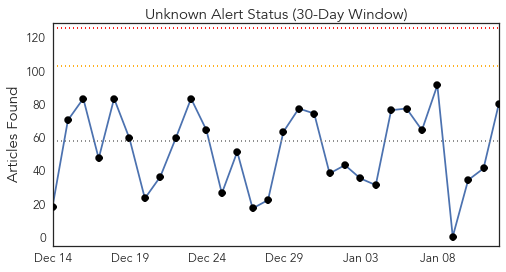
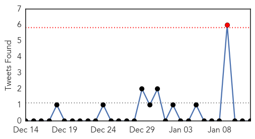
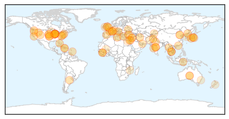
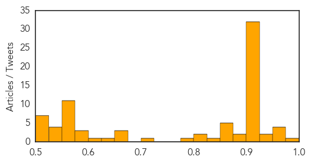

Influenza
30-Day Web Trend
1 alerts, 0 warnings

30-Day Twitter Trend
0 alerts, 0 warnings

Article Locations

X

Article Confidences

Top Articles:
- 0.999
- The Marysville Advocate: News
- 0.999
- Nasty H3N2 flu season worsens as cases rise across Canada
- 0.998
- This Year’s Flu More Severe for Older People: CDC
- 0.997
- Officials see rapid spike in state's flu cases
- 0.996
- CDC Said This Season’s Flu Vaccine Was Less Than 60 Percent Effective
- 0.990
- Two afflicted with H7N9 bird flu strain in China
- 0.989
- Why The Flu Vaccine Doesn't Always Work
- 0.979
- Influenza numbers drop; public still advised to maintain clean schools, villages
- 0.978
- Health Department offers free flu vaccines
- 0.968
- Pharmacists to administer flu vaccinations to South Australians from March
- 0.959
- Scripps to Restrict Visitors During Flu Season
- 0.944
- Flu season in NJ downgraded to moderate
- 0.906
- Officials monitor flu outbreaks at Iowa care centers
- 0.906
- Iowa officials monitor flu outbreaks at care centers
- 0.895
- Family: Two Year Old Died After Influenza A Diagnosis
- 0.885
- Mesa County flu season continues despite state's slight decline
- 0.774
- Taiwan confirms first case of H5N8 bird flu
- 0.728
- The ‘straw that breaks the camel’s back’?
- 0.709
- Bird flu fears lead 30 countries to ban Northwest poultry
- 0.707
- Flu numbers on rise in Mass.
- 0.669
- Taiwan Confirms Avian Flu H5N8 Strain
- 0.517
- About one million Chinese couples ask to have second child after easing of one-child policy
Top Tweets:
- 0.892
- RT: Weekly threat report: the start of influenza season cases of botulism in people who inject drugs and Ebola update http://t…
Unknown
30-Day Web Trend
0 alerts, 0 warnings

30-Day Twitter Trend
1 alerts, 0 warnings

Article Locations

Article Confidences
Top Articles:
- 0.979
- 10 myths about cold and flu that are definitely not true
- 0.969
- 212 infected with HIV due to contaminated equipment in Cambodia
- 0.965
- Jaundice outbreak puts Niphad village on edge
- 0.964
- Tuesday, 13th January 2015 at 4Hoteliers
- 0.963
- NZ’s ‘virus hunters’ make new discovery
- 0.941
- CDC Urges Doctors to Prescribe Flu Drugs
- 0.925
- Avian Flu Scan for Jan 12, 2015
- 0.923
- U Hopes to Stop Spread of the Flu
- 0.917
- Chicago Tribune
- 0.917
- Chicago Tribune
- 0.917
- Chicago Tribune
- 0.917
- Chicago Tribune
- 0.917
- Chicago Tribune
- 0.917
- Chicago Tribune
- 0.917
- Chicago Tribune
- 0.917
- Chicago Tribune
- 0.917
- Chicago Tribune
- 0.917
- Chicago Tribune
- 0.917
- Chicago Tribune
- 0.917
- Chicago Tribune
- 0.917
- Chicago Tribune
- 0.917
- Chicago Tribune
- 0.917
- Chicago Tribune
- 0.917
- Chicago Tribune
- 0.917
- Chicago Tribune
- 0.917
- Chicago Tribune
- 0.917
- Chicago Tribune
- 0.917
- Chicago Tribune
- 0.917
- Chicago Tribune
- 0.917
- Chicago Tribune
- 0.917
- Chicago Tribune
- 0.917
- Chicago Tribune
- 0.917
- Chicago Tribune
- 0.917
- Chicago Tribune
- 0.917
- Chicago Tribune
- 0.915
- DeLauro gets flu shot, pushes for national sick day law
- 0.910
- The world windows to Thailand
- 0.910
- The world windows to Thailand
- 0.910
- The world windows to Thailand
- 0.899
- Carter Center: 126 Cases of Guinea Worm Disease Remain Worldwide - South Sudan
- 0.886
- Local & Regional by AnguillaLNT a SMG Product
- 0.866
- Obama, Netanyahu discuss Iran talks, Palestinian ICC move
- 0.866
- U.S. Senate bill to approve Keystone XL pipeline clears hurdle
- 0.866
- Taiwan reports H5N8 bird flu outbreak
- 0.866
- "Artificial" barriers between Russia, EU will be lifted
- 0.866
- Paris attacks accomplice entered Syria on Jan 8
- 0.829
- Number of STDs reported increased 41 per cent in Abu Dhabi in 2014
- 0.824
- Flu death toll rising in Washington; 5-year-old Pierce County girl among fatalities
- 0.821
- HIV Outbreak Linked to Infected Needles
- 0.787
- Jimmy Carter's Work to Defeat Guinea Worm Highlighted in New Exhibit
Showing top 50 articles...
Top Tweets:
-
No tweets found for Jan 12, 2015